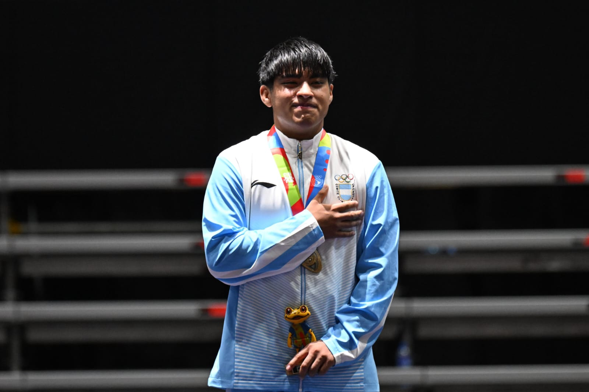

¿QUIEN ES BENJAMIN CASAS?
"Nací el 23 de febrero de 2009, hijo de una maestra de danzas y un papá amante del deporte, pionero de la lucha olímpica cordobesa. Mi camino como deportista empezó con mi papá dando clases de lucha en Toledo; crecí entrenando con pañales sobre un colchón de lucha hasta llegar al día de hoy, poniéndome una malla que dice «Argentina» y lleva mi nombre en la espalda. En 2014 tuve mi primer torneo nacional, donde competí en ambos estilos y me consagré campeón nacional con solo 6 años. Empecé a crecer y a enamorarme cada vez más de este deporte. A mis 9 años se me presentó mi primer proyecto a futuro: los Juegos Evita. Emocionado, comencé a prepararme y a entrenar como un profesional. A los 10 años, en 2019, tuve mi primer torneo internacional en La Paz, Bolivia, donde salí campeón en 57 kg y 61 kg, y obtuve la medalla de bronce escolar (15-14 años) en 52 kg, siendo reconocido como el mejor luchador internacional del torneo. Cuando empezó la pandemia, no dejé que me tirara abajo; entrené todos los días confiando en que en algún momento llegaría otra competencia. A los 13 años, en 2022, tuve mi primer clasificatorio para un lugar en la selección argentina, con destino a un campo de entrenamiento de un mes en Brasil. Compitiendo en 68 kg y 75 kg, quedé entre los mejores del país, representando por primera vez estos colores tan hermosos que tiene mi bandera. Por diferentes circunstancias, quedé fuera de mis primeros Juegos Evita convencionales. A principios de 2024, participé en los primeros y únicos Juegos Evita de Playa (lucha olímpica), siendo campeón en la única categoría, hasta 70 kg. Ese año comenzaron mis primeros campos de entrenamiento U17 y sénior, siendo sparring de la selección argentina rumbo a los Juegos Panamericanos Santiago 2023. Además, obtuve un reconocimiento de La Voz del Interior, ganando los Premios Estímulo de lucha olímpica en su edición 2023. En 2024, al enterarnos con mi familia de la oportunidad de competir por primera vez en un Panamericano, decidimos que sí, era el momento indicado. Empezamos a juntar plata: hicimos rifas, vendimos comida, vendimos cosas; hicimos lo que fuera necesario para costear mi viaje al Panamericano u15 en El Salvador. Luchando con una lesión de rodilla, logramos buenos resultados: dos medallas de bronce en la categoría hasta 75 kg en ambos estilos (grecorromano y libre masculino). Muy contento con el desempeño, sumé mis primeras medallas internacionales oficiales. Dentro del mismo año, conseguimos apoyo para un torneo Sudamericano Open en Río de Janeiro, Brasil, donde competí en dos categorías: U17 (71 kg libre y grecorromano) y U15 (75 kg en ambos estilos). Salí campeón en U17 estilo grecorromano y bronce en libre masculino; y en U15, me consagré doble campeón sudamericano. Cerrando uno de los mejores años de mi carrera hasta ahora, participé en mis primeros y únicos Juegos Evita convencionales. Para muchos lo que era un torneo más del montón, para mí era un sueño que anhelaba desde muy chico, uno que se me iba escapando y quedando cada vez más lejos a medida que crecía y disminuían las oportunidades. Hasta que, en noviembre de 2024, viajé a Mar del Plata con mi delegación cordobesa: llena de deportistas de todos los deportes y diferentes edades, pero todos con un mismo objetivo: ganar. Fui decidido y con total concentración en lo que debía hacer salí campeón de la categoría hasta 75kg estilo libre masculino , dándome el resultado que tanto esperé y deseé. En 2025 comencé mi preparación para el torneo Panamericano en Niterói, Brasil, realizando varios campos de entrenamiento con luchadores olímpicos de alto nivel como Arsen Julfalakyan y Agustín Destribats. Allí pude prepararme y obtener el bronce panamericano en el estilo libre masculino de la categoría hasta 71 kg U17 en abril de ese año, seguido de un bronce sudamericano en Río de Janeiro, Brasil, luchando con una de las peores lesiones de mi carrera: una fractura vertebral. Tras meses de recuperación, logré volver a los colchones, más fuerte, y comencé mi preparación para mis primeros Juegos Sudamericanos de la Juventud en Ciudad de Panamá, Panamá. Dentro de esa preparación, pasé por Chile compitiendo en uno de los mejores torneos del país, el Open Wrestling Con Con, seguido de mi clasificatorio argentino para el Panamericano U17 y los Juegos Sudamericanos de la Juventud, logrando el pase en ambos en la categoría 71 kg estilo libre masculino. En el torneo Panamericano no obtuve el resultado que esperaba, quedando en 5.º lugar y, lamentablemente, sumando una lesión más. Semana después, llegó mi debut en los Juegos Sudamericanos de la Juventud. Estaba con el entrenador que desde pequeño me enseñó mis primeros movimientos, el que me cambiaba los pañales, aguantaba mis llantos, me compró mis primeras botas de lucha y me vio crecer: mi entrenador y papá, Diego Casas. Estando en mi esquina, me sentía más seguro y tranquilo, sabiendo que si ganaba o perdía, él iba a estar ahí para seguir conmigo a la par, mejorando día a día. Ese día fue distinto; ambos sabíamos que algo grande se aproximaba y que estábamos listos. Y sí, se nos dio. Tantos años de entrenamientos, sacrificios, esfuerzos, llantos, alegrías, dietas, días de sauna y gastos habían dado fruto. Me consagré campeón de la cuarta edición de los Juegos Sudamericanos de la Juventud con mi papá en la esquina, un sueño que tuve desde pequeño. Solía ver en mi casa a mis compañeros de club pasear con su bandera, tener su ropa del Comité Olímpico Argentino, luchando por algo más que ellos mismos, por su país, por su bandera y por su equipo. Esta vez me había tocado a mí estar en ese lugar, en ese podio, sobre ese colchón, con mis botas de lucha puestas y con una malla que en mi espalda decía «CASAS - ARG». Mis compañeros ahora me estaban mirando a mí; era mi momento de brillar y demostrar quién soy. Después de eso, a las pocas semanas, fui convocado para representar al país en el Mundial U17 de lucha olímpica en Bakú, Azerbaiyán. Esta es solo una parte de mi historia, por eso te cuento que… soy Benjamín Casas, luchador internacional, de 17 años, nacido en Córdoba capital, actual seleccionado argentino y escritor… Sí, escritor de mi propia historia".